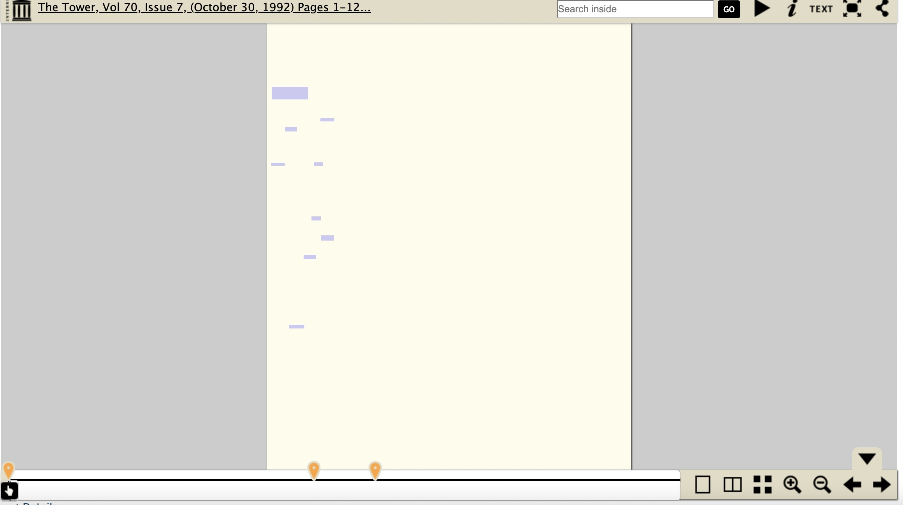
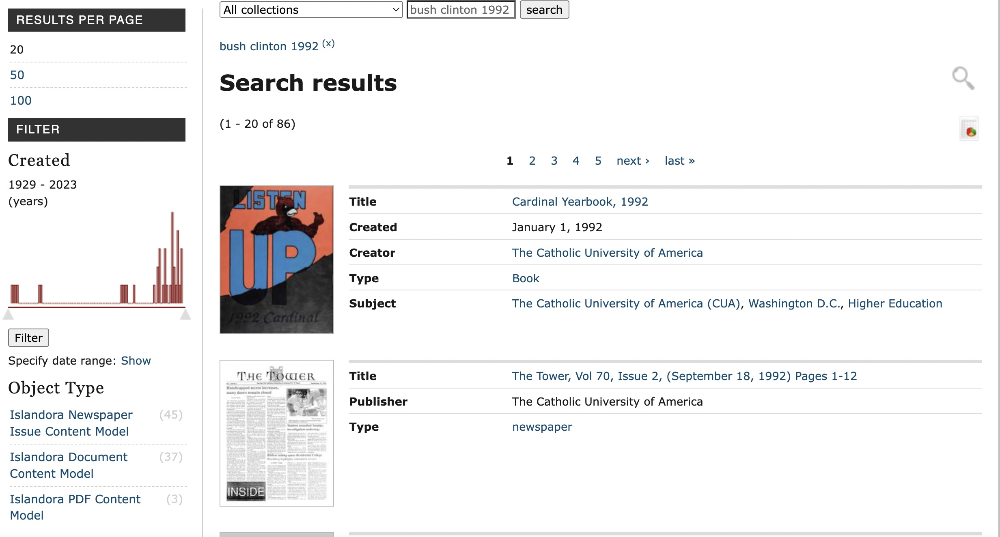

Isaac Stone
Dr. Oh
LSC 555
13 November 2024
Evaluating The Tower Digital Collections
| Inputs | Outputs |
|---|---|
| Using search bar | Brings up content from all CUA archival sources, not just newspapers |
| Date range bar | Helps to narrow down the time frame for your search, as it should |
| Clicking to open archival PDF document in browser | Either long wait time or PDF on website is broken, in which case the user needs to download it |
| Clicking on the logo on top of the page | Brings you to the University Libraries website, not back to the Tower archive |

Suggestions for improvement:
The heuristic analysis that I conducted, and the usability test done by my friend which I oversaw, yielded mostly the same results. Though the Tower archive usefully provides many decades worth of historical records, the poor user interface, long load times, and incongruity of links and documents makes searching the database a confusing and sometimes frustrating experience. Were the university to go back to fix the archive, should be a focus on consistency in the timeline - say, both a "next" button that takes users to the scanned paper immediately chronologically after the one they're viewing, and links to papers grouped by decade on each page - and error prevention taking the form of at least warning users that some links might not work. There should be a way to immediately go back to the start of the Tower archive, instead of the link on top only taking users to the main university libraries page.